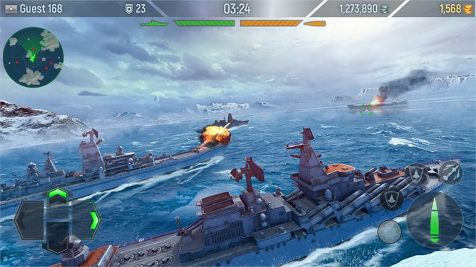

Mientras los ejércitos de humanos, orcos y sus aliados se recuperaban de la batalla contra la Legión Ardiente, Arthas Menethil, ahora Caballero de la Muerte, masacraba a los habitantes de los Reinos del Este de Azeroth en nombre de la Plaga.

Es un videojuego de estrategia en tiempo real para computadoras personales.
Desata la guerra por toda la galaxia y lidera el destino de tres razas únicas y poderosas
Los videojuegos de estrategia son videojuegos que requieren que el jugador ponga en práctica sus habilidades de planeamiento y pensamiento para maniobrar, gestionando recursos de diverso tipo (materiales, humanos, militares...) para conseguir la victoria. En la mayoría de los videojuegos de estrategia "al jugador se le concede una vista del mundo absoluta, controlando indirectamente las unidades bajo su poder".
"El origen de los videojuegos de estrategia está fuertemente vinculado con sus primos cercanos, los juegos de mesa de estrategia".
Los videojuegos de estrategia generalmente toman una de cuatro posibles formas arquetípicas dependiendo de si el juego es por turnos, en tiempo real y si el juego se enfoca en estrategia de todos los ámbitos o solo en una, preferentemente la militar (táctica). Sin embargo todo juego contiene implícitas cada una de estas 4 características que se pueden traslapar de tal manera que sea muy complejo clasificar a un juego dentro de un solo subgénero.
Los videojuegos de estrategia en tiempo real o RTS son videojuegos de estrategia en los que no hay turnos sino que la acción transcurre de forma continua en el tiempo.
Los videojuegos en tiempo real son de los subgéneros de la estrategia más dinámicos que hay. Además, por regla general están más trabajados en el apartado gráfico, ya que al tener terrenos de juego más pequeños que otros subgéneros, se pueden representar más texturas sin alterar tanto el rendimiento.
Están pensados para ser jugados de forma muy dinámica y rápida. A diferencia de los basados en turnos, no precisan un planteamiento tan pausado de las decisiones y se centran muy a menudo en la acción militar. La recolección de recursos suele ser simple, solo hay materias primas. Las batallas se representan a una escala de refriega, aunque hay varios juegos que se centran en representar batallas multitudinarias con millares de unidades en el terreno.

Se los conoce también por sus siglas en inglés RTT (real-time tactics). Compartiendo aspectos de los juegos de simulación y juegos de guerra, los juegos de táctica en tiempo real se enfocan en aspectos operacionales y control de guerra. A diferencia de los juegos de estrategia en tiempo real, el manejo económico y de recursos y la construcción de edificios no forman parte de las batallas. Algunos ejemplos son la saga Commandos, Warhammer: Dark Omen, World in Conflict y la saga Close Combat.
También se los conoce por sus siglas en inglés TBS (turn-based strategy). El término "juego de estrategia por turnos" generalmente se aplica a ciertos videojuegos de estrategia para distinguirlos de los juegos de estrategia en tiempo real. Un jugador de un juego por turnos dispone de un período de análisis antes de realizar una acción. Algunos ejemplos de este género son Empire-Strike, Civilization, y las sagas Heroes of Might and Magic y Master of Orion.
Casi todos los juegos de estrategia que no sean videojuegos (juegos de mesa) son por turnos. El mercado de los juegos de computadora últimamente se ha inclinado más por los juegos en tiempo real.
Conocidos también por sus siglas TBT (turn-based tactics). La jugabilidad táctica por turnos se caracteriza por la expectativa de los jugadores por completar sus tareas usando solo las fuerzas de combate que se les proveen, y usualmente por la disposición de una representación realista (o por lo menos creíble) de operaciones y tácticas militares. Ejemplos del género son Jagged Alliance y la saga X-COM, así como juegos de rol tácticos como Final Fantasy Tactics, la saga Fire Emblem y los juegos de la desarrolladora Nippon Ichi.
Independientemente de que sean en tiempo real o por turnos, estratégicos o tácticos, los videojuegos de estrategia se categorizan a menudo por su temática o su enfoque, pues poco tienen que ver aquellos que se centran por ejemplo en el desarrollo de un imperio con los que se basan en la defensa o la destrucción de una fortaleza o una facción enemiga.
Los juegos de guerra son un subgénero de los juegos de estrategia cuyos componentes principales son guerras tácticas o estratégicas en un mapa. Los juegos de guerra pueden ser por turnos o en tiempo real y de estrategia o táctica. Algunos de ellos están basados en hechos históricos. Ejemplos de este subgénero son el Close Combat o el Combat Mission.
También conocidos como 4X, son juegos en los que debe explorar, expandir, explotar y exterminar. Pueden ser por turnos o en tiempo real. Quizás los juegos más conocidos de este subgénero sean las series Civilization y Age of Empires, World of Warcraft: Warlords of Draenor, EVE Online, Crowfall, Conan Exiles, Mount&Blade, Hegemony.
Son juegos, generalmente por turnos, en los cuales tanques se atacan unos a otros o similares. Los juegos de artillería son un tipo de juego de estrategia, aunque también se los ha descrito como juegos de disparos.

En este género se enfatiza el juego en equipo, los jugadores seleccionan y controlan un "héroe", una unidad de gran alcance con varias habilidades y ventajas para formar la estrategia general de un equipo. El objetivo es destruir la estructura principal de los oponentes con la ayuda de unidades controladas por ordenador generadas periódicamente que marchan hacia la estructura principal del enemigo a través de senderos a los que se refiere como "carriles". Se diferencia de los juegos tradicionales RTS en que no hay construcción de unidades (estas se generan solas) y los jugadores controlan sólo un personaje. Algunos ejemplos de estos juegos son: League of Legends, Defense of the Ancients, Heroes of the Storm o Brawl Stars
Tower defense o TD es un subgénero de los videojuegos de estrategia en tiempo real. El objetivo es lograr que las unidades enemigas no lleguen a cruzar el mapa, para lograrlo se deben construir torres u otros artefactos que las atacan al pasar. Tanto los enemigos como las torres tienen diferentes habilidades y costes. Al eliminar una unidad enemiga se reciben puntos o dinero que debe ser utilizado para construir o mejorar torres. Ejemplos destacados son: Desktop Tower Defense, Plants vs. Zombies, Kingdom Rush.